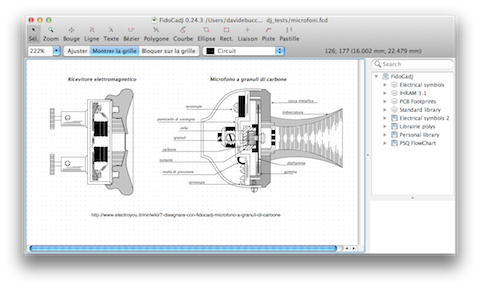
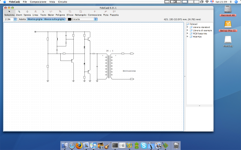
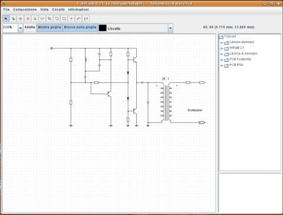
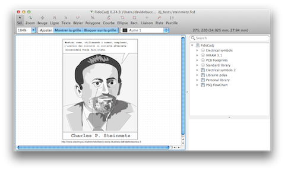

Current stable version 0.24.4
FidoCadJ is an easy to use vector graphic editor, with a library of electrical symbols and footprints (traditional and SMD). It is an agile and effective small EDA tool for hobbyists.
FidoCadJ stores the drawings in a compact format, that can be copied and pasted in newsgroups and forum messages.
FidoCadJ is multi-platform and runs on MacOSX, Linux and Windows.
Free download
|
|
FidoCadJ_Windows.msi | 0.8 MiB | Windows installer (Java 1.7 at least). |
| FidoCadJ_MacOSX.dmg | 10 MiB | MacOSX application (>10.7.3, you need Java 1.7). Open the dmg disk image, and copy the FidoCadJ application into your Application directory. | |
| fidocadj.jar | 530 KiB |
Version for any operating system (with Java version 1.7 at least). Often, you can can double click on the file. Or type from a shell: java -jar fidocadj.jar |
|
|
fidocadj_manual_en.pdf |
2.5 MiB | The English FidoCadJ user manual. | |
|
|
The FidoCadJ SourceForge project: post a bug report, ask for a particular feature, check the source code... |
The file fidocadj.jar sometimes is saved with the zip extension. Rename it with the correct extension, which is jar. If Java is not installed in your system, you can freely download it from the Oracle web site.
A few words about FidoCadJ...
FidoCadJ can export drawings in several graphical formats (PDF, EPS, SVG, PNG, JPG). LaTeX users will be happy about the possibility of including circuits in documents via the PGF/TikZ export.
Give us your feedback about FidoCadJ! The best thing to do is to write a review on Sourceforge, or participate to the forums. If you are happy, tell your friends :-) If you are a developer, contact us on SourceForge.
FidoCadJ is the official drawing tool of ElectroYou, the italian social network for electronics. It is routinely used in the forum and in the blog posts.
Screenshots
|  | microfoni.fcd (from an EY article) |
|  | eccitatore.fcd |
|  | eccitatore.fcd |
|  | steinmetz.fcd (from an EY article) |
{kind=link}
{kind=link}
{kind=link}
{kind=link}
Previous stable version: 0.24.3
Requires Java 1.5 at least.
|
|
FidoCadJ_Windows.msi | 0.8 MiB | Windows installer (Java 1.5 at least). |
| FidoCadJ_MacOSX.dmg | 10 MiB | MacOSX application (>10.4, requires Java 1.5 at least). Open the dmg disk image, and copy the FidoCadJ application into your Application directory. | |
| fidocadj.jar | 530 KiB |
Version for any operating system (with Java version 1.5 at least). Often, you can can double click on the file. Or type from a shell: java -jar fidocadj.jar |
|
|
fidocadj_manual_en.pdf |
2.5 MiB | The English FidoCadJ user manual. |
Follow the FidoCadJ development on Twitter: @davbucci
April, 30, 2014
License

--------
Copyright (C) 2007-2014 Davide Bucci davbucci at tiscali dot it
This program is free software: you can redistribute it and/or modify
it under the terms of the GNU General Public License as published by
the Free Software Foundation, version 3 of the License.
This program is distributed in the hope that it will be useful,
but WITHOUT ANY WARRANTY; without even the implied warranty of
MERCHANTABILITY or FITNESS FOR A PARTICULAR PURPOSE. See the
GNU General Public License for more details.
You should have received a copy of the GNU General Public License
along with this program. If not, see http://www.gnu.org/licenses/.